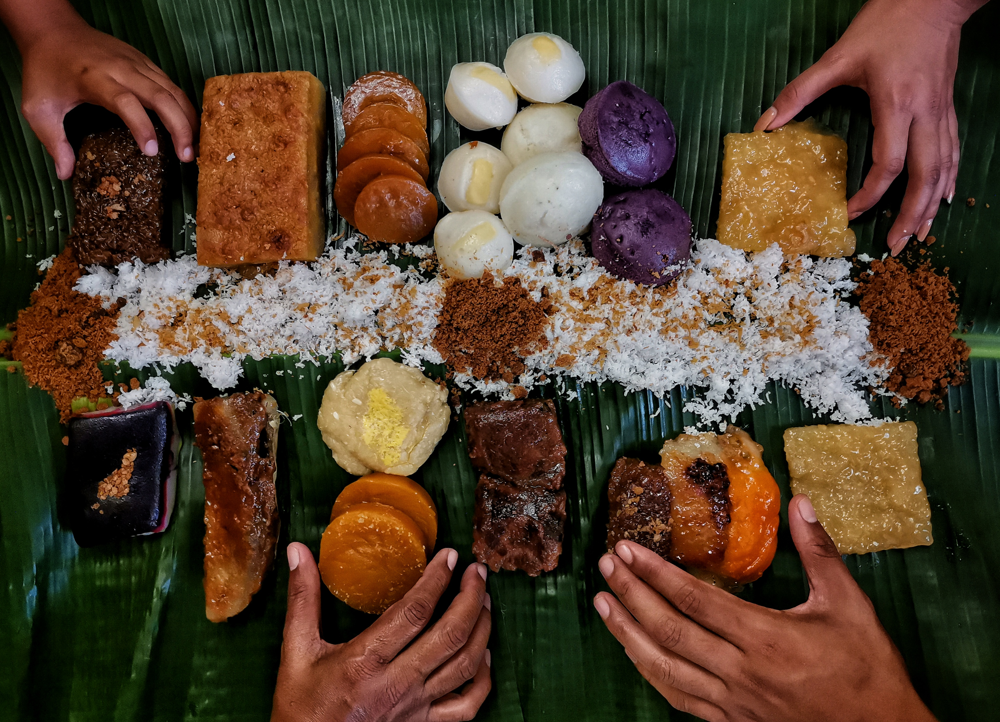

The sweet treats that define Filipino culture

Kakanin is one of the most memorable Filipino snacks because it is sweet, colorful, and deeply connected to Filipino culture. Many kinds of kakanin are made with rice, coconut milk, sugar, and other simple ingredients that create comforting flavors. Snacks like puto, kutsinta, biko, sapin-sapin, and suman are often enjoyed during merienda, celebrations, and family gatherings.
What makes kakanin special is not only its taste but also the memories and traditions behind it. In the Philippines, people often buy kakanin from markets, street vendors, or neighbors who make them fresh. For me, kakanin feels like home because it reminds me of sharing food with family, enjoying simple treats, and appreciating Filipino culture. It's a delicious way to connect with my heritage and create new memories with loved ones. So if you ever get the chance to try kakanin, I highly recommend it!